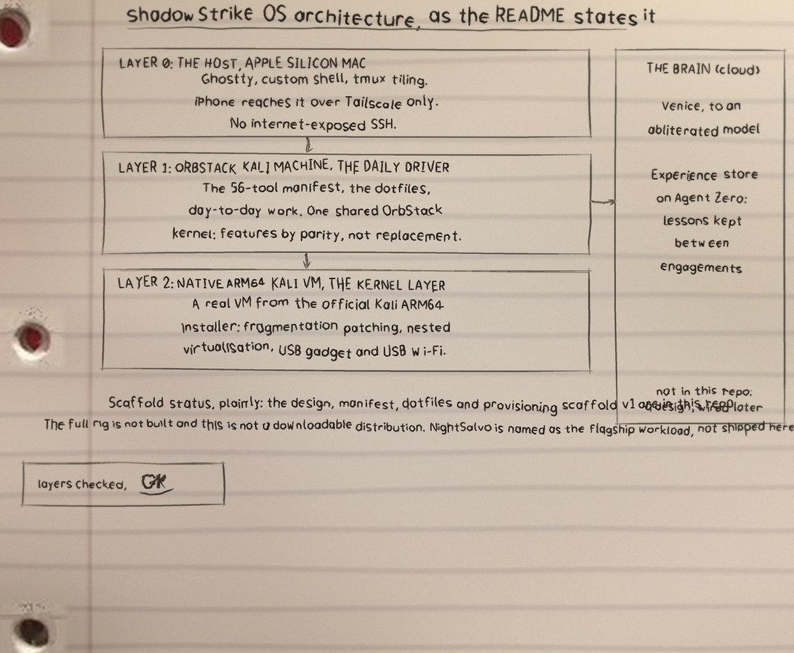
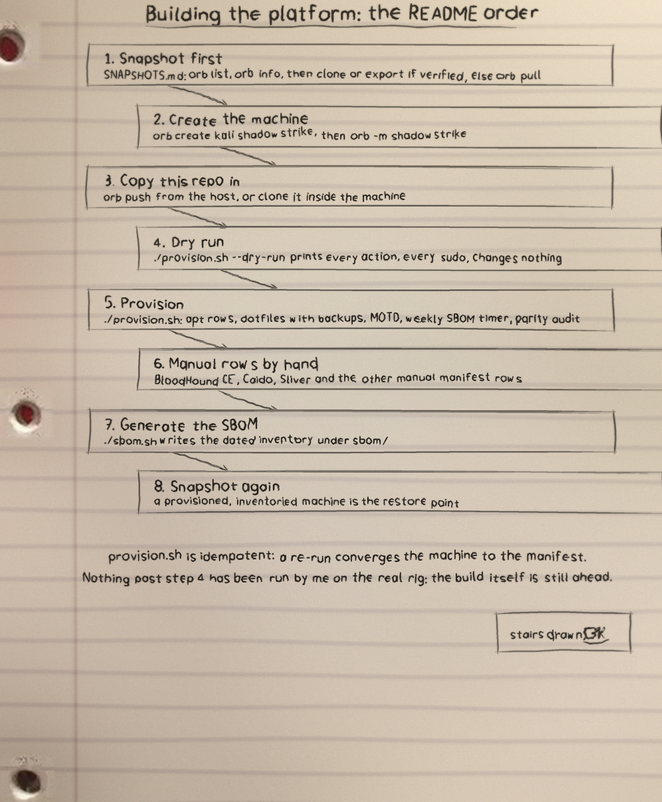
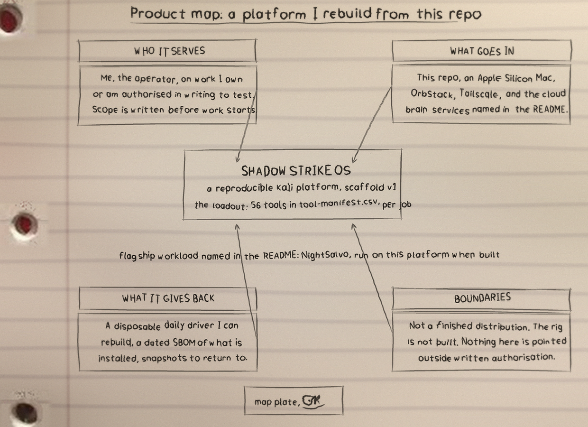

Operator: Epsilon0xCell Mark: the globe-head operator (see assets/). Silver is the mark, green is the signal. The static logo is never recoloured, never stretched, and never placed on a light background.
What it is
ShadowStrike OS: 33 files, 20514 counted lines across SVG 18953, Shell 884, Markdown 661. One job, done in the open, in files you can read.
The biggest piece
ShadowStrike-OS-Visuals/components.svg carries the most
lines. If the project grows, that file is where the growth
lands first, for better or worse.
The honest gap
No test files yet. That is the honest gap, and the roadmap in the visuals folder says what the first one should cover.
Run it
The repo README has the exact commands for this one. The shape is the shape for most of my projects: clone it, read the top file first so you know what will happen, then run it on something you do not mind breaking.
$ git clone https://github.com/ShadowStrikeOS/ShadowStrike-OS.git
$ cd ShadowStrike-OS
The code, as it sits in the repo
From ShadowStrike-OS-Visuals/components.svg, line 1 on. I did
not tidy it for the page. What you see is what the file has.
<svg xmlns="http://www.w3.org/2000/svg" width="1240" height="960" viewBox="0 0 1240 960">
<defs><filter id="soft" x="-20%" y="-20%" width="140%" height="140%"><feGaussianBlur stdDeviation="7"/></filter>
<linearGradient id="edgeR" x1="0" y1="0" x2="1" y2="0"><stop offset="0" stop-color="#9aa4ae" stop-opacity="0"/><stop offset="1" stop-color="#9aa4ae" stop-opacity="0.35"/></linearGradient>
<linearGradient id="edgeB" x1="0" y1="0" x2="0" y2="1"><stop offset="0" stop-color="#9aa4ae" stop-opacity="0"/><stop offset="1" stop-color="#9aa4ae" stop-opacity="0.35"/></linearGradient></defs>
<rect width="1240" height="960" fill="#f4f6f8"/>
<path d="M 1237 458 L 1143 725" stroke="#8d97a1" stroke-width="38" stroke-opacity="0.087" filter="url(#soft)" fill="none"/>
<path d="M 1211 449 L 1117 716" stroke="#ffffff" stroke-width="20" stroke-opacity="0.069" filter="url(#soft)" fill="none"/>
<path d="M 1292 -59 L 939 74" stroke="#8d97a1" stroke-width="24" stroke-opacity="0.060" filter="url(#soft)" fill="none"/>
<path d="M 1286 -76 L 932 57" stroke="#ffffff" stroke-width="13" stroke-opacity="0.047" filter="url(#soft)" fill="none"/>
<path d="M 1078 465 L 791 701" stroke="#8d97a1" stroke-width="39" stroke-opacity="0.086" filter="url(#soft)" fill="none"/>
<path d="M 1060 443 L 773 679" stroke="#ffffff" stroke-width="20" stroke-opacity="0.068" filter="url(#soft)" fill="none"/>
<path d="M 835 -9 L 828 279" stroke="#8d97a1" stroke-width="29" stroke-opacity="0.091" filter="url(#soft)" fill="none"/>
<path d="M 814 -10 L 807 278" stroke="#ffffff" stroke-width="15" stroke-opacity="0.072" filter="url(#soft)" fill="none"/>
<path d="M 463 645 L 436 831" stroke="#8d97a1" stroke-width="40" stroke-opacity="0.070" filter="url(#soft)" fill="none"/>
<path d="M 434 641 L 407 827" stroke="#ffffff" stroke-width="21" stroke-opacity="0.055" filter="url(#soft)" fill="none"/>
<path d="M 722 36 L 664 534" stroke="#8d97a1" stroke-width="21" stroke-opacity="0.071" filter="url(#soft)" fill="none"/>
<path d="M 707 34 L 649 532" stroke="#ffffff" stroke-width="11" stroke-opacity="0.056" filter="url(#soft)" fill="none"/>
<path d="M 83 318 L 120 497" stroke="#8d97a1" stroke-width="33" stroke-opacity="0.077" filter="url(#soft)" fill="none"/>
<path d="M 59 323 L 96 502" stroke="#ffffff" stroke-width="17" stroke-opacity="0.061" filter="url(#soft)" fill="none"/>
<path d="M 439 562 L 432 773" stroke="#8d97a1" stroke-width="39" stroke-opacity="0.058" filter="url(#soft)" fill="none"/>
<path d="M 410 561 L 404 772" stroke="#ffffff" stroke-width="21" stroke-opacity="0.046" filter="url(#soft)" fill="none"/>
<path d="M 316.6 52.3 L 316.5 52.5 L 316.2 52.7 L 315.9 52.9 L 315.4 53.0 L 314.4 53.0 L 313.6 53.2 L 314.6 55.8 L 315.2 55.2 L 315.7 54.9 L 316.5 54.8 L 317.3 54.5 L 317.9 54.0 L 318.2 53.5 Z" fill="#2f2d2a" fill-opacity="0.99"/>The files that matter
| File | Lines |
|---|---|
ShadowStrike-OS-Visuals/components.svg | 4425 |
ShadowStrike-OS-Visuals/architecture.svg | 4396 |
ShadowStrike-OS-Visuals/flowchart.svg | 4275 |
ShadowStrike-OS-Visuals/product-map.svg | 3451 |
ShadowStrike-OS-Visuals/statistics.svg | 2406 |
kernel-parity/audit.sh | 347 |
Names doing the work: say, act, run_cmd, sudo_cmd, make_dir, deploy_file, cleanup, check_marker.
Drawn by hand
I sketch my projects on notebook paper so I have to understand them well enough to draw them. The full set, with the counts and how they were counted, is the ShadowStrike-OS-Visuals folder in the repo. Nothing is drawn over the binder holes. That is a rule, not a style.


